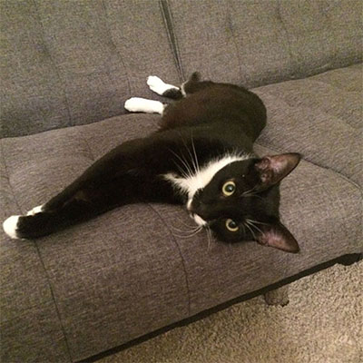
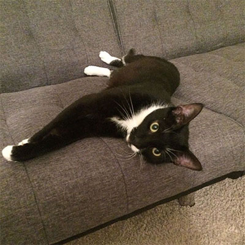
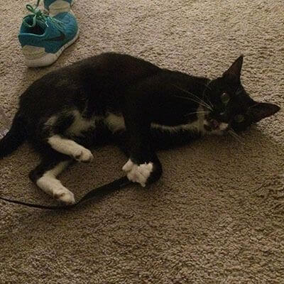
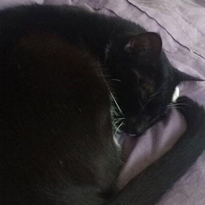
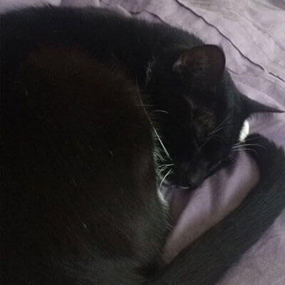
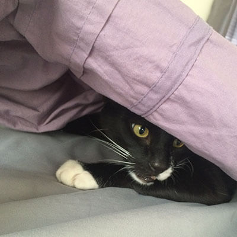
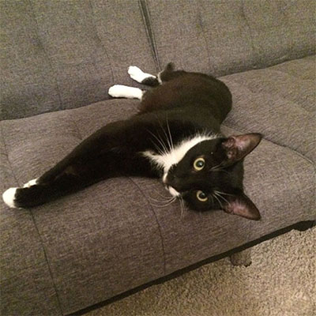
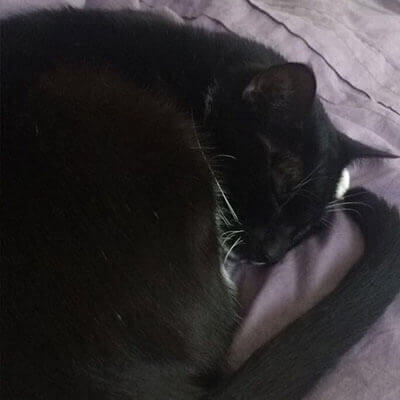

 



I am excited to help him find his forever home.
Kaitlyn's Fostering Adventure


I am excited to help him find his forever home.
It is not a full commitment. If you can't afford to adopt a cat, its much easier to foster one for a few months.
It is so fufilling! Foster cats are usually cats that get looked over because they are shy or scared. By taking them into your home, you allow them to be in a happy enviroment that will help them blossom.
You get to fall in love all over again! Once your foster cat gets adopted you can get a new one and get to start the process all over again.